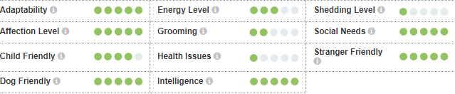

Главна карактеристика сфинкс мачке је недостатак крзна! Мачке, међутим, нису потпуно без длаке, вец́ су прекривене фином, пуфнастом длаком за коју се каже да је попут коже брескве. Ова мачка нема бркове ни трепавице. Глава подсец́а на главу девон рекс расе. Очи су дубоко постављене и имају облик лимуна. Тело је кошчато али мишиц́аво и има испупчене груди. Ноге су дуге и витке и изгледају као да су повијене што је узроковано испупченим грудима. Реп је дугачак и сужен и тврд на додир. Топли су и мекани на додир и стекли су име ‘термофор од преврнуте коже’. Кожа је наборана на деловима главе, тела и ногу, али би требало да буде затегнута на остатку тела. Пигментација је јасно видљива на кожи сфинкс мачке. Све ознаке и боје коже су прихватљиве.
Власници морају обратити посебну пажњу на одржавање коже сфинкса чистом и еластичном. Кожу сваке недеље треба прати или четкати сунђером како би се уклонио масни секрет. Масни секрет се такође мора редовно чистити из спољног уха како би се спречиле упале уха.
Свака мачка је јединствена и свака има своја посебна свиђања, несвиђања и потребе када је храна у питању. Међутим, мачке су месоједи и свака мачка мора добити 41 специфичан хранљиви састојак из хране. Проценат ових хранљивих састојака варирац́е у зависности од старости, начина живота и целокупног здравља, па не чуди то што ће енергично маче захтевати другачији баланс хранљивих састојака у својој исхрани од мање активне, старије мачке. Поред тога, треба узети у обзир и храњење правилном количином хране за одржавање ‘идеалног телесног стања’ у складу са смерницама и прилагођавање индивидуалним преференцама у вези са мокрим или сувим рецептима.
Мачка сфинкс је дружељубива, несташна, оријентисана на људе и воли пажњу. Ове мачке често поздрављају власнике кад се врате куц́и и врло су причљиве. Изузетно су интелигентне, разигране и нежне. Сфинкси су прваци у предењу. Воле да спавају са својим власницима - испод покривача. Њихова телесна температура је степен или два изнад просека за нормалне мачке и имају велики апетит како би надокнадиле губитак топлоте. Ове мачке не могу да се остављају на хладноћи, не воле да седе на хладним површинама и цене централно грејање! Ако излазе на сунце вероватно ће им требати заштита од сунца.
За симпатичан видео ове маце кликните овде